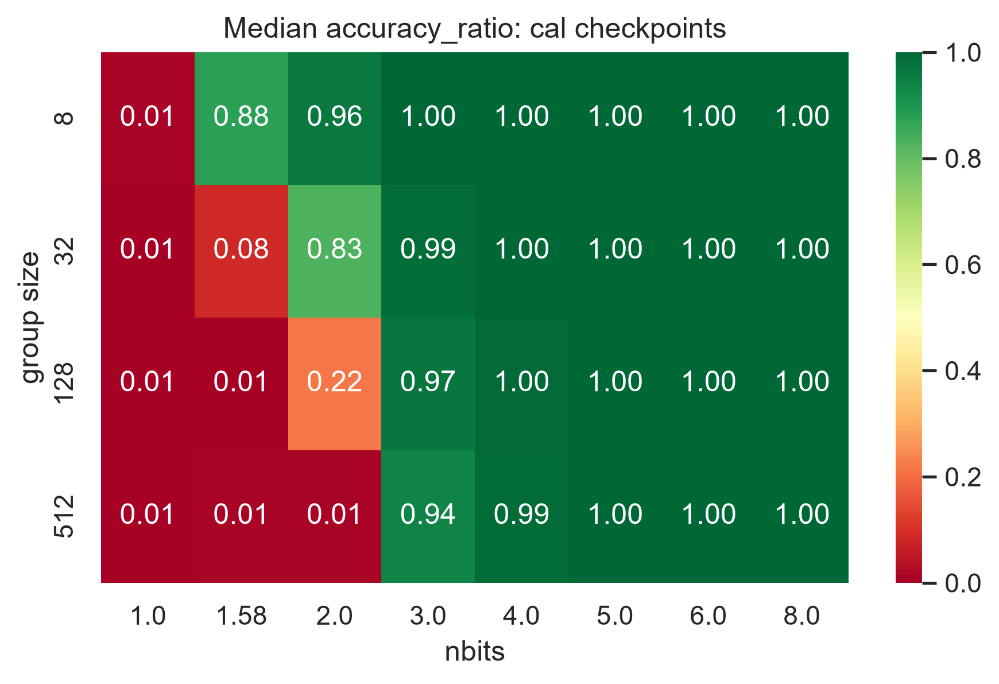
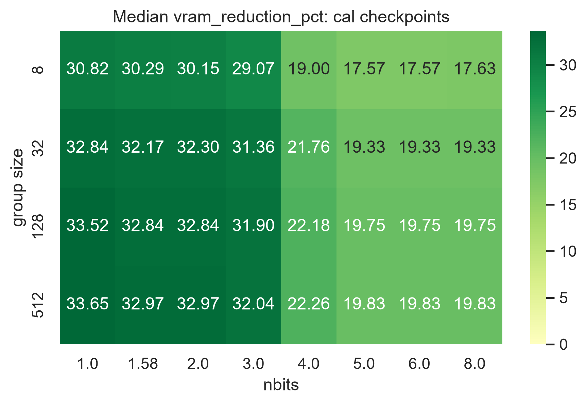
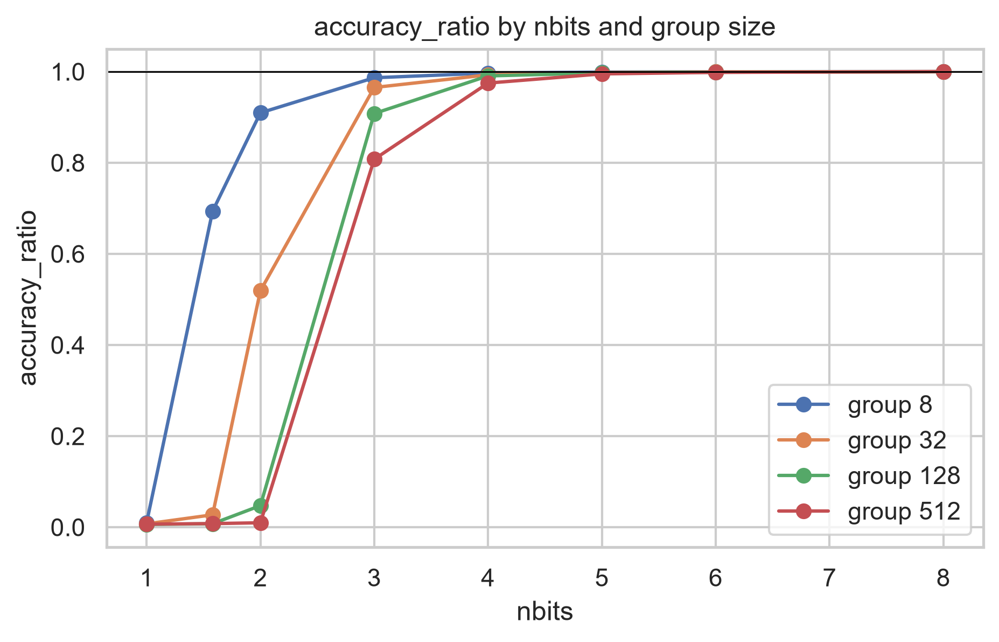
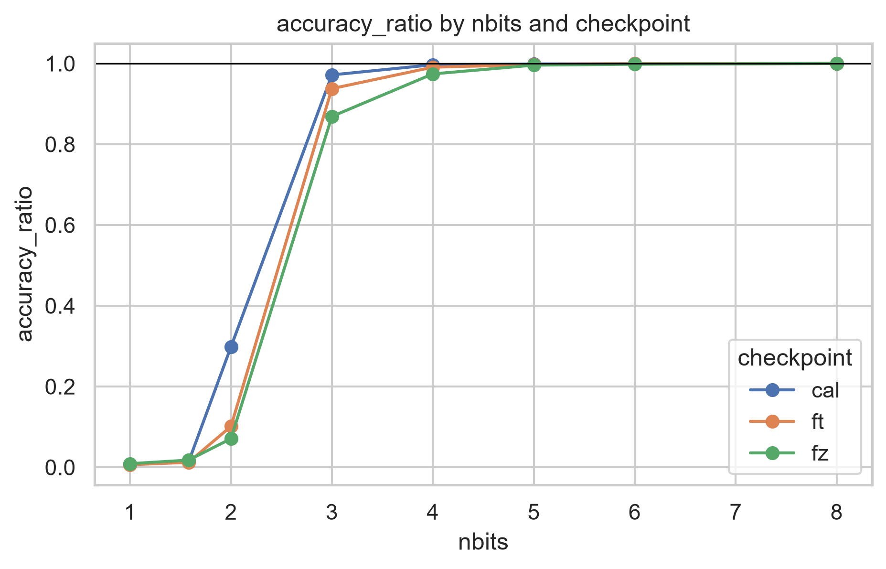
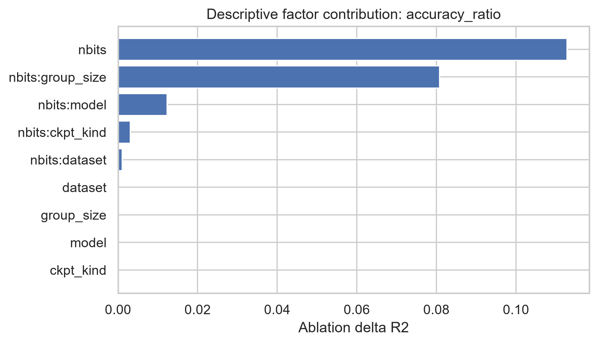

Accuracy drop heatmap
讀每格的 median accuracy_ratio。1 = 完全保留 FP32 accuracy，接近 0 = 量化後幾乎無用。這消除了不同 checkpoint 之間 FP32 baseline 差距的干擾（例如 FZ 起點只有 68%、FT 起點 88%），讓相對退化程度可直接比較。


_ft、_fz。這份導讀把 864 個量化設定 cell 的圖表放進同一條閱讀路徑：先確認資料能否信任，再理解 bit 與 group 的影響，最後查統計排名。
每一個 prepared cell 固定一組 (dataset, model, checkpoint kind, nbits, group size)。同一 cell 的重複 run 不會被當成多個 seed，而是以 median 合併；所有相對指標都對應相同 (dataset, model, checkpoint kind) 的 FP32 serial 4999 baseline。
seed=0。這些圖描述此完整實驗網格中的趨勢、效應與取捨，不能當成跨 seed 的顯著性檢定或因果結論。accuracy_ratio = hqq_top1 / fp32_top1越接近 1 越好。1 = 完全保留 FP32 accuracy，0.5 = 剩一半。這消除了不同 checkpoint baseline 難度差異的影響，讓跨情境的相對 degradation 可比較。
100 × (fp32_vram_gb - hqq_vram_gb) / fp32_vram_gb越高越好。正值代表 HQQ 比 matched FP32 baseline 使用更少 VRAM。
100 × (fp32_params_m - hqq_params_m) / fp32_params_m越高越好。它常與 VRAM reduction 同方向。
100 × (hqq_time - fp32_time) / fp32_time越低越好，但只作 exploratory 指標。重跑時間差異很大，先看 quality plot 再引用它。
先看 heatmap：在不同 bit / group 下，哪裡開始掉 accuracy、哪裡真的省 VRAM。
看 interaction：整體趨勢是否會被某個 group 或 checkpoint kind 改變。
看 factor contribution：哪些因子在這份設計網格中最能解釋 outcome。
看 Stats 排行榜：delta R² 與 Spearman ρ 給出 factor importance 的兩條互補視角。
每張 heatmap 固定 checkpoint kind，將所有 dataset × model context 的同一 (nbits, group size) 取 median。橫軸是 nbits，縱軸是 group size；它回答的是「在這個 checkpoint 類型中，哪個量化區域通常較安全或較省資源」。
讀每格的 median accuracy_ratio。1 = 完全保留 FP32 accuracy，接近 0 = 量化後幾乎無用。這消除了不同 checkpoint 之間 FP32 baseline 差距的干擾（例如 FZ 起點只有 68%、FT 起點 88%），讓相對退化程度可直接比較。

_ft、_fz。讀每格的 median vram_reduction_pct。高正值表示通常更省 VRAM；必須和 accuracy heatmap 一起看，不能只追求最綠的格子。

_ft、_fz。interaction_nbits_group_<metric>每條線代表一個 group size，點是跨其他 context 的 median outcome。若曲線大致平行，group size 只是在整體上下平移；若曲線交叉或斜率差很多，代表 nbits × group_size interaction 值得注意。

interaction_nbits_context_<metric>每條線代表 cal / ft / fz checkpoint kind。它用來檢查 checkpoint 訓練方式是否改變量化對 bit width 的敏感度。這不是單一 model/dataset 的曲線，而是跨其他 context 的 median。

factor_contribution_<metric> 來自 trend regression 的 ablation。每根 bar 表示拿掉某一 term group 後，模型 R² 減少多少（delta R²）。bar 越大，表示該 term 對這份資料網格的預測越重要。
factor_effects_*.csv 與 model_fit_*.json。
兩張表回答不同問題：delta R² ablation 來自 levels（categorical）模型，nbits / group_size 各自為獨立的 dummy column、不強制線性關係，能捕捉「低 bit 崩潰、高 bit 趨穩」的非線性 pattern；Spearman ρ 衡量 factor 與 outcome 的單調關聯強度，適合非線性關係，且固定了 confound 情境。
R² = 1 − SSE / SST，其中 SSE = Σ(y_i − ŷ_i)²（殘差平方和，模型沒解釋到的部分），SST = Σ(y_i − ȳ)²（總平方和，資料本身的總變異量）。R² = 0 表示模型不比用平均值猜好；R² = 1 表示完美擬合。R²_full，再把某個 term group（例如 nbits 及其所有 interactions）從設計矩陣中刪除，重 fit 得到 R²_reduced，delta = R²_full − R²_reduced。delta 越大，表示該 term group 在控制了其他 factor 之後，對預測 accuracy 的額外貢獻越多。注意：各 term 的 delta R² 不可相加，因為 term 之間的解釋力有重疊。| term group | delta R² |
|---|---|
| nbits | 0.113 |
| nbits × group_size | 0.081 |
| nbits × model | 0.012 |
| nbits × ckpt_kind | 0.003 |
| nbits × dataset | 0.001 |
| dataset | ≈0 |
| term group | delta R² |
|---|---|
| nbits × model | 0.147 |
| model | 0.100 |
| nbits | 0.071 |
| nbits × ckpt_kind | 0.021 |
| ckpt_kind | 0.004 |
| group_size | 0.002 |
| term group | delta R² |
|---|---|
| nbits | 0.100 |
| nbits × model | ≈0 |
| model | ≈0 |
| nbits × ckpt_kind | ≈0 |
| ckpt_kind | ≈0 |
| nbits × dataset | ≈0 |
| term group | delta R² |
|---|---|
| nbits × ckpt_kind | 0.052 |
| dataset | 0.028 |
| nbits | 0.024 |
| nbits × group_size | 0.020 |
| nbits × dataset | 0.014 |
| model | 0.011 |
每個值都控制了 confound 情境：nbits_within_context 固定 (dataset, model, ckpt_kind, group_size)；group_within_context 固定 (dataset, model, ckpt_kind, nbits)。值範圍 −1 至 1。當 Spearman ρ 明顯大於 Pearson r，代表關係非線性但強單調，Spearman 是更可靠的第一手指標。
| outcome | global Pearson r | within-context Spearman ρ (nbits) | within-context Spearman ρ (group_size) | 特徵 |
|---|---|---|---|---|
accuracy_ratio | +0.75 | +0.98 | −0.80 | Spearman 遠高於 Pearson → 非線性，但 nbits 順序強烈決定 accuracy 保留比例 |
vram_reduction_pct | −0.50 | −0.95 | +1.00 | nbits 越高、VRAM 節省越少；group_size 越大、節省越少 |
params_reduction_pct | −0.69 | −0.82 | −1.00 | 參數節省主要由 bit width 決定，group size 有完美單調影響 |
time_delta_pct | −0.02 | −0.81 | −0.20 | Global Pearson 近 0（被 confound 淹沒），但控制了情境後 Spearman 揭露強單調關聯 |
time_delta_pct 的 global Pearson r = −0.02 看起來無關聯，但 within-context Spearman = −0.81 告訴你「當其他條件相同時，bit 越大時間越省」——這是 confound 被 dataset/model 難度差異淹沒了。要真正理解 factor importance，應兩張表一起看。factor_contribution_*.png 的 bar chart 提供了更細的 term-group 分解；完整的數值在 factor_ablation_*.csv 與 correlations_*.csv。| 圖 | 數值 | 原始欄位 | 單位 |
|---|---|---|---|
accuracy_heatmap_<ckpt> | cell value | hqq_top1 / fp32_top1 | ratio (0~1)：1 = 完全保留 FP32 accuracy，0.5 = 剩一半 |
vram_heatmap_<ckpt> | cell value | 100 × (fp32_vram_gb - hqq_vram_gb) / fp32_vram_gb | %：正值省 VRAM，-10 = HQQ 多用 10% VRAM |
interaction_nbits_group_accuracy | y | accuracy_ratio | ratio (0~1) |
interaction_nbits_group_vram | y | vram_reduction_pct | % |
interaction_nbits_group_params | y | params_reduction_pct | % |
interaction_nbits_group_time | y | time_delta_pct | % |
interaction_nbits_context_<metric> | y | 對應上述四個 metric | 同對應 metric：pp 或 % |
factor_contribution_<metric> | bar 長度 | delta_R² | dimensionless：R² 為 0–1 比值；沒有物理單位 |
| 圖 | 軸 | 單位 |
|---|---|---|
| heatmap 橫軸 | hqq_nbits | bit：1 / 1.58 / 2 / 3 / 4 / 5 / 6 / 8 |
| heatmap 縱軸 | hqq_group_size | count（整數）：8 / 32 / 128 / 512 個權重 / group |
| interaction_nbits_* | x = hqq_nbits | bit |
| factor_contribution_* | y 軸（barh）= term 名稱 | dimensionless（類別軸，非數值） |
| 出現位置 | 數值 | 單位 |
|---|---|---|
| heatmap 每格 annotation | median outcome | ratio（accuracy）或 %（vram） |
interaction 圖的 axhline | 0 或 1 | accuracy ratio: 參考線在 1（完全保留）；VRAM/params/time: 參考線在 0 |
baseline_contexts.csv / prepared_quant_cells.csv | fp32_top1、hqq_top1 | %（Top-1 accuracy，原始 WandB 數字） |
| 同上 | fp32_vram_gb、hqq_vram_gb | GB（VRAM） |
| 同上 | fp32_params_m、hqq_params_m | M（百萬個）：參數個數 |
| 同上 | time_total_s | 秒 (s) |
| 同上 | hqq_nbits | bit |
| 同上 | hqq_group_size | count |
| 同上 | seed、serial | dimensionless ordinal |
model_fit_*.json | r2、adjusted_r2 | dimensionless（0–1 比值） |
model_fit_*.json | loo_mae、loo_rmse | 與該檔對應的 outcome 同單位（pp 或 %） |
model_fit_*.json | condition_number | dimensionless |
correlations_*.csv | correlation | dimensionless（Pearson / Spearman ρ，−1 至 1） |